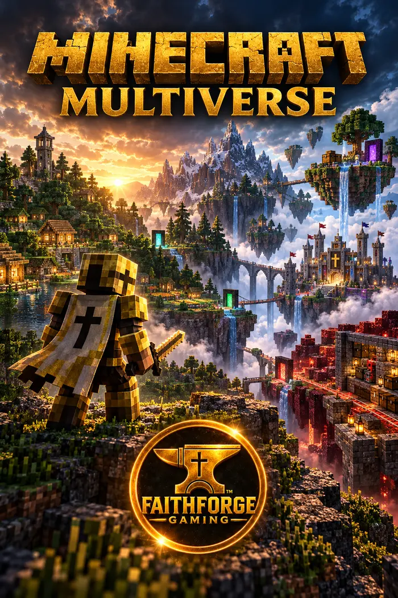
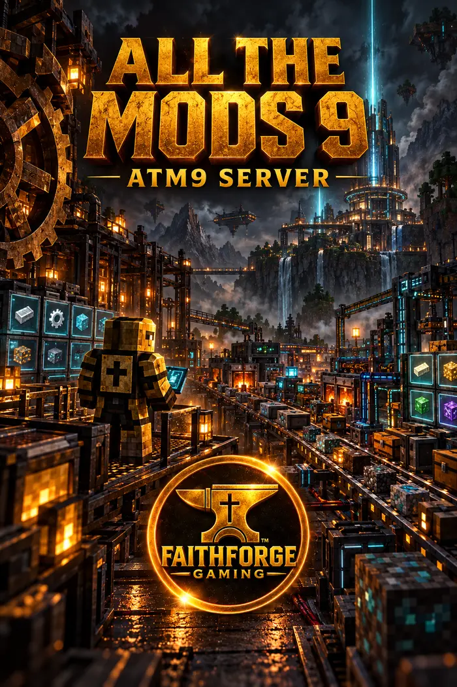
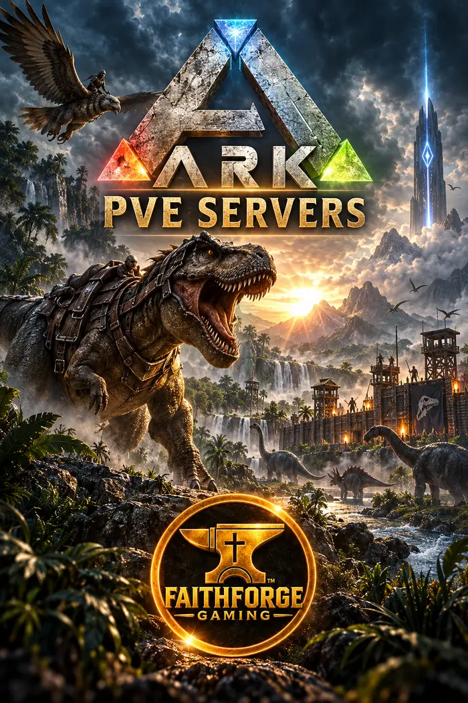

Minecraft — FaithForge Multiverse

Welcome to FaithForge Gaming — a friendly, Christ-centered Minecraft multiverse forever server focused on creativity, teamwork, adventure, and fellowship.
🌍 Worlds You Can Explore
- Spawn Hub
- Survival
- Amplified Survival (mods, machines, new items)
- Creative
- Redstone Flats
- Elite Mobs RPG Worlds (open worlds, quests, dungeons, bosses, arenas)
- Skyblock Adventure
- Oneblock (solo islands)
- Escape Worlds
- Event Worlds
- Parkour Worlds
- Bed Wars
- Cake Wars
- Siege Wars
- Smash Blast Brawler
- Build Battle (build, topics, vote, arenas)
Server Details
• Java + Bedrock Crossplay (Geyser/Floodgate)
• Multiple worlds & playstyles
• Economy: farming, fishing, villager trading, exploration
• No pay-to-win
• Whitelisted — apply via Discord
Rules & Expectations
- Be respectful.
- No griefing, stealing, hacking, or cheating.
- Family-friendly chat & builds.
- No profanity — Christian community.
- Participate and have fun!
How to Join
Join our Discord → FaithForgeGaming.com
Read the rules and select your channels in the #✅rules & #♦️channel-role-assignment channels.
Make sure to select Minecraft in the #♦️channel-role-assignment channel.
Apply in the #✅whitelist-ids channel.
Join in on the fun!
🎮 Player Count
New members join every week — this is your forge. 🔨✨
Minecraft — ATM9 (All The Mods 9)

FaithForge also runs an All The Mods 9 server featuring deep tech, magic, automation, bosses, and exploration.
Includes mods like:
• Create
• Mekanism
• Applied Energistics
• Magic mods
• New dimensions
• Storage & automation systems
• Apotheosis
• Farmers Delight & Botania
Ark Survival Ascended — PVE Server

A friendly vanilla Ark PVE community server with, adjusted stats, multiple maps, and no mods.
- Connected maps
- Adjusted Stats/Multipliers
- Events
- Cooperative gameplay
- Christian family-friendly server